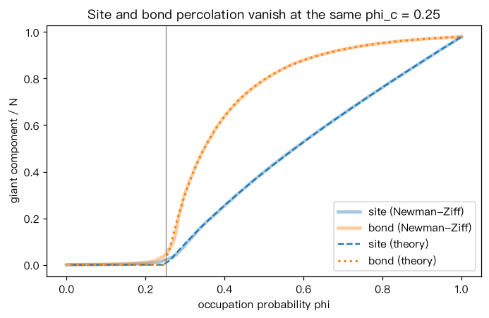
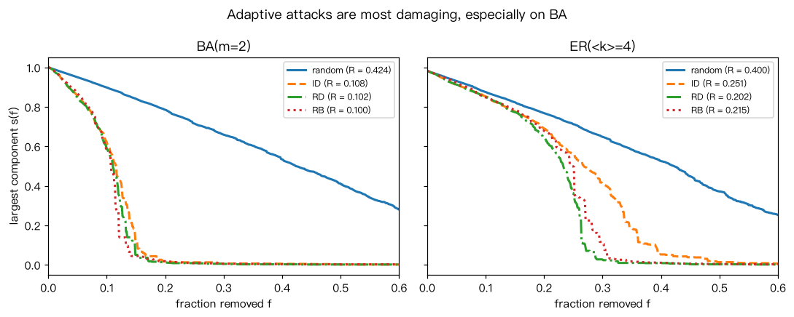
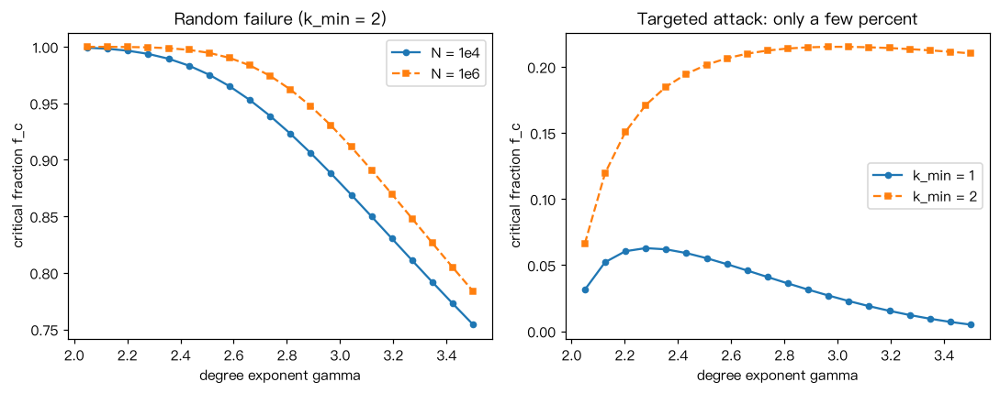
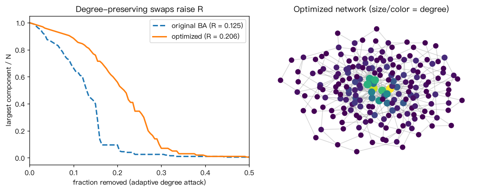
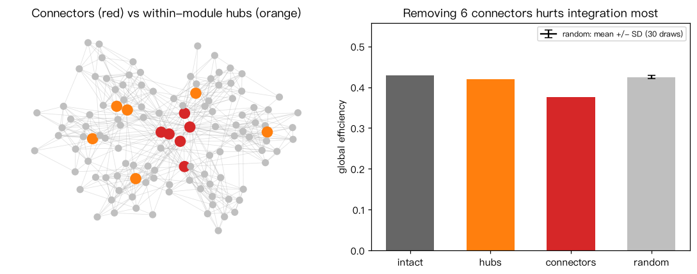

网络鲁棒性、渗流与级联失效
研究网络在节点或连边失效、蓄意攻击与级联传播下能否保持整体连通与功能，以及如何量化、预测和提高鲁棒性。
鲁棒性（robustness）指系统在部分组件失效后仍能维持基本功能的能力。细胞中蛋白错误折叠、反应缺失时时发生，大多数单基因敲除并不致死；脑卒中可以毁掉一片皮层，病人却可能只出现局限的缺损；而另一些时候，一个小小的初始故障会沿着网络放大，演变为大面积停电、多器官衰竭或细胞死亡。系统能承受什么样的损伤、在哪里会突然崩溃，在很大程度上由连接结构决定。
本专题从统计物理的渗流理论出发，回答四组问题：（1）随机删除节点或连边时，网络何时碎裂，临界阈值怎样由度分布决定，为什么无标度网络“耐随机失效、怕蓄意攻击”；（2）攻击者掌握的信息越多（度、介数、每一步重新计算），网络瓦解得有多快；（3）当失效会传递——负载重分配、阈值触发、相互依存——级联何时出现，规模服从什么分布；（4）怎样量化和提高鲁棒性，以及这些思想在蛋白必需性、代谢网络基因敲除、脑损伤和癌症合成致死中的用法与限度。
基础概念见连通分支与巨连通分支和ER 随机网络；网络可控性与稳定性中的结构鲁棒性给出了随机失效阈值 的最短推导，本专题在此基础上系统展开。渗流也是网络上的传播与免疫的数学核心：SIR 最终规模等价于边渗流，目标免疫就是对传播网络的“攻击”。结构鲁棒性与动力学稳定性、韧性的区别见动力学稳定性。
Contents知识页面
VIDEO讲解视频
文字稿
我们先来看一张网络。每个圆点是一个节点，比如一个蛋白质；每条线是一条边，表示两个蛋白质之间有相互作用。 好，我们来做一个小实验：随机拿掉一些节点，看看这张网络会怎么样。 现在拿掉了两成的节点。你看，蓝色的这一大块，仍然连在一起，网络的主体还在。 接下来换一种拿法。这一次，专门挑连接最多的那几个节点，就是画了红圈的这几个。 只拿掉百分之五——整张网络，就碎成了很多互不相连的小块。 同一张网络，面对随机故障很稳，面对有针对的攻击却很脆弱。这一期，我们就把其中的原因讲清楚。 这一期分三部分来讲。 第一部分，网络在什么条件下会碎裂。 第二部分，枢纽为什么既是盾牌，也是软肋。 第三部分，当故障会传染时，网络怎样一步步崩溃。 先看第一部分。我们从一个更简单的情形开始：把一堆点随机地连起来。 右边这张图，横轴是平均每个点连了几条边，纵轴是最大的那一团占全部点的比例。一开始边很少，到处都是零散的小碎片。 边慢慢增加，小碎片开始合并成稍大的团。 注意看——当平均每个点连上一条边的时候，最大的那一团突然变大，曲线开始往上冲。 这种突然的变化，叫作渗流相变。平均每个点一条边，就是它的临界点。 把这个过程倒过来，就是网络的故障：节点一个个被删掉，删到超过某个比例，最大的那一团就消失了。 那么，这个临界比例由什么决定。我们用一个直观的办法来想。 从一个节点出发，沿着一条边走到它的邻居。然后数一数：除了刚才来的那条边，这个邻居还有几条边可以继续往外走。 如果平均下来，每到一个邻居，都还有不止一条路可以走，扩散就能一直进行下去，最大的那一团就存在。 这里有个关键：沿着边走到的邻居，往往是连接比较多的节点。在这张网络里，节点平均有不到三条边，而邻居们平均有五条以上。 把这个想法写成公式，就是莫洛伊和里德的判据：这个比值要大于二。 分母是连接数的平均。分子是连接数平方的平均——平方会把大的数放得更大，所以连接特别多的枢纽，会把这个比值大大抬高。 随机删掉节点，这个比值会慢慢变小。它降到二的那一刻，就是网络崩溃的临界点。下面这个公式，给出了对应的删除比例。 下面进入第二部分。先比较两种网络。左边是随机网络，每个节点的连接数都差不多。 右边是无标度网络。大多数节点只有一两条边，少数几个枢纽却有几十条，就是这几个闪动的大点。 算一下刚才那个比值：随机网络大约是三点七，无标度网络超过八。比值越大，网络越能扛住随机删除。 我们来做一个实验，用四千多个节点的网络。横轴是删掉节点的比例，纵轴是最大的那一团还剩多少。 灰色曲线，是随机网络遇到随机故障。删到八成左右，曲线落到零，网络彻底碎了。 蓝色曲线，是无标度网络遇到随机故障。它下降得很慢，后面拖着一条长尾巴，几乎撑到最后。 红色曲线，是同一张无标度网络，但这次按连接数从多到少去删。不到百分之十，曲线就掉到了底。 所以，枢纽是一把双刃剑：随机故障很难碰到它们，网络因此很稳；可一旦专门攻击它们，网络很快就瓦解。 这个规律在生物学里也看得到。画面里，是正在出芽繁殖的酵母细胞。 2001年，《自然》杂志上的一项研究，画出了酵母的蛋白质互作网络，再逐个比对：敲除哪些蛋白质，细胞会死。 大多数蛋白质只有几个互作伙伴。敲除这样的蛋白质，细胞通常还能活下来。 统计下来，互作伙伴不超过五个的蛋白质里，只有大约百分之二十一是必需的，也就是一敲除，细胞就会死。 而在互作伙伴超过十五个的枢纽蛋白里，这个比例升到了百分之六十二。 这和刚才的网络实验是一致的：细胞能承受很多随机突变，可枢纽一旦被破坏，往往是致命的。 最后是第三部分。前面我们假设，一个节点坏了不会影响别人。可在电网这样的系统里，一个节点倒下，它承担的负荷会转给邻居。 看这张小网络。每个节点都在承担一些负荷。绿色表示还有余量，越接近黄色，越接近它能承受的上限。 现在，左边这个节点失效了，变成红色。它的负荷平均分给了周围的邻居。 有几个邻居本来就快到上限，一下子被压垮，也变成红色，又把负荷推给下一圈。 就这样一轮接一轮，一个局部的小故障，放大成了整张网络的崩溃。这就是级联失效。 研究者用同样的思路，模拟了整个北美电网。他们发现，大约百分之十一的输电线路，容易被卷进这样的级联。 再看一个真实的例子。2003年8月14日，北美发生大停电，起点只是俄亥俄州几条输电线路的故障。 故障一路扩散，最终大约五千万人失去电力。纽约街头，很多人只能步行回家。 所以，在负荷会转移的系统里，关键不是多连几条线，而是给每个节点留出足够的冗余容量。 这个道理也适用于大脑。大脑由多个功能模块组成，模块之间靠少数枢纽区域相连。 脑卒中，是一片脑组织突然缺血受损。如果受损的是某个模块内部的普通区域，影响通常只限于一种功能。 但如果受损的恰好是连接多个模块的枢纽，模块之间就断了联系，影响会波及好几种认知功能。 好，我们来总结一下。 第一，网络什么时候碎裂，由渗流阈值决定；阈值取决于连接数平方的平均，和连接数平均的比值。 第二，枢纽让无标度网络能扛住随机故障，也让它在针对枢纽的攻击面前格外脆弱。 第三，当负荷会转移时，小故障会级联放大，所以冗余容量非常关键。 这个专题的知识页面里，有画面上的这个交互演示。你可以切换网络类型，亲手对比随机删除和定向攻击。
INTERACTIVE交互可视化
CODE计算实现
9 个完整可运行的 Python 示例，每个都给出代码、输出图和解读；可在浏览器中直接运行，或下载 Jupyter Notebook · Python 脚本 · 在 JupyterLite 中打开 ↗。

生成函数求解点渗流与边渗流，并与 Newman–Ziff 模拟比较
随机失效与四种攻击策略的比较，并计算 R 指标
无标度网络的随机失效阈值与攻击阈值（连续度近似） Motter–Lai 负载重分配级联
Motter–Lai 负载重分配级联 Watts 阈值级联的"级联窗口"与分支过程
Watts 阈值级联的"级联窗口"与分支过程 相互依存 ER 网络的级联（Buldyrev 等 2010）
相互依存 ER 网络的级联（Buldyrev 等 2010）
保度换边优化 R 指标，得到"洋葱"结构（Schneider 等 2011） 玩具代谢网络的单基因与双基因敲除——必需基因与合成致死对
玩具代谢网络的单基因与双基因敲除——必需基因与合成致死对
模块化"脑网络"的虚拟损伤——枢纽 vs 连接者Practice自测、练习与案例
References核心文献
Albert、Jeong 与 Barabási 2000：Error and attack tolerance of complex networks（Nature）
- 背景：互联网、万维网等系统在大量组件随机故障下仍能工作，其结构原因是什么？
- 核心发现：无标度网络对随机删点高度鲁棒，对按度攻击极其脆弱；ER 网络对两种删除的反应相近。
- 阅读要点：区分直径与最大分支两种鲁棒性指标；注意攻击使用的是初始度还是重新计算的度。
- 延伸思考：在蛋白相互作用网络中，“随机失效”和“蓄意攻击”分别对应什么生物学过程（自发突变、药物、病原体效应蛋白）？
DOI：10.1038/35019019；精读：Albert 2000
Callaway、Newman、Strogatz 与 Watts 2000：Network robustness and fragility: percolation on random graphs（PRL）
- 背景：此前的随机图渗流结果多限于泊松度分布，与真实网络的偏态度分布相去甚远。
- 核心发现：用生成函数给出任意度分布网络上点渗流、边渗流以及“占据概率依赖于度”的渗流的精确解，统一处理随机失效与按度删除。
- 阅读要点：掌握 一类自洽方程的推导和图解；对照同期 Cohen 等（2000）的 Molloy–Reed 路线。
- 延伸思考：如果占据概率依赖于节点的某个生物学属性（如表达量）而不是度，方程应怎样修改？
DOI：10.1103/PhysRevLett.85.5468
Cohen、Erez、ben-Avraham 与 Havlin 2000/2001：Resilience of the Internet to random breakdowns；Breakdown of the Internet under intentional attack（PRL）
- 背景：Albert 等（2000）的模拟结论需要解析理论支撑。
- 核心发现：2000 年的论文由 Molloy–Reed 判据得到随机删除阈值，证明 时无限网络不会因随机删除而碎裂；2001 年的论文推导按度攻击的阈值方程，表明攻击阈值很小。
- 阅读要点：注意有限规模下 随 的变化，以及攻击推导中“把删枢纽转化为随机删边”的技巧。
- 延伸思考：若网络存在度相关（枢纽彼此相连），攻击推导的哪一步不再成立？
DOI：10.1103/PhysRevLett.85.4626；10.1103/PhysRevLett.86.3682
Motter 与 Lai 2002：Cascade-based attacks on complex networks（Physical Review E）
- 背景：静态删点忽略了失效后负载的重新分配。
- 核心发现：在负载可重分配的网络中，负载高度异质使网络特别脆弱：移除单个关键节点就可能引发覆盖大部分网络的过载级联。
- 阅读要点：理解容量 的设定和 随 的变化；比较按负载、按度和随机触发。
- 延伸思考：代谢网络或血管网络中，“负载”与“容量”分别可以对应什么物理量？
DOI：10.1103/PhysRevE.66.065102
Buldyrev 等 2010：Catastrophic cascade of failures in interdependent networks（Nature）
- 背景：基础设施相互依存，单一网络的鲁棒性理论不足以描述其失效。
- 核心发现：相互依存使渗流转变成为一级相变，阈值大幅提高；度分布越宽，系统越脆弱。
- 阅读要点：重点理解 的图解与切点条件。
- 延伸思考：在细胞中，哪些网络对之间存在严格意义上的“依赖”？
DOI：10.1038/nature08932；精读：Buldyrev 2010
Schneider 等 2011：Mitigation of malicious attacks on networks（PNAS）
- 背景：单一渗流阈值无法反映网络在崩溃之前承受的损伤。
- 核心发现：提出 R 指标；保度换边可以在几乎不改变功能的前提下显著提高 R；最鲁棒的网络呈洋葱结构。
- 阅读要点：注意 R 用的是自适应度攻击；比较 R 与渗流阈值 对同一改造的反应。
- 延伸思考：如果把“换边”的成本设为生物学约束（如脑网络中的连线长度），优化结果会怎样？
Alstott 等 2009：Modeling the impact of lesions in the human brain（PLoS Computational Biology）
- 背景：局灶脑损伤的功能后果高度依赖部位，且常难以预测。
- 核心发现：在人脑结构连接组上用动力学模型模拟损伤，损伤会改变远处脑区的功能连接；中线和颞顶联合区附近的损伤影响广泛，初级感觉运动区损伤影响局限。
- 阅读要点：区分“结构删点后的拓扑变化”与“动力学模型中的功能连接变化”两类评估。
- 延伸思考：如何用卒中病人的纵向数据检验模型预测？
DOI：10.1371/journal.pcbi.1000408
Lord 与 Ashworth 2017：PARP inhibitors: synthetic lethality in the clinic（Science）
- 背景：合成致死在酵母遗传学中早已熟知，如何变成癌症疗法？
- 核心发现：综述 PARP 抑制剂从 BRCA 缺陷细胞的合成致死（Farmer 2005；Bryant 2005）到临床获批的过程，以及耐药与联合用药的挑战。
- 阅读要点：把“肿瘤失去一条修复通路”理解为网络冗余的丧失。
- 延伸思考：网络方法能否预测哪些肿瘤会对 PARP 抑制剂产生耐药？
其他引用文献
- Molloy M, Reed B (1995) A critical point for random graphs with a given degree sequence. Random Structures & Algorithms. 10.1002/rsa.3240060204
- Newman MEJ, Ziff RM (2000) Efficient Monte Carlo algorithm and high-precision results for percolation. PRL. 10.1103/PhysRevLett.85.4104
- Newman MEJ, Strogatz SH, Watts DJ (2001) Random graphs with arbitrary degree distributions and their applications. PRE. 10.1103/PhysRevE.64.026118
- Cohen R, ben-Avraham D, Havlin S (2002) Percolation critical exponents in scale-free networks. PRE. 10.1103/PhysRevE.66.036113
- Holme P, Kim BJ, Yoon CN, Han SK (2002) Attack vulnerability of complex networks. PRE. 10.1103/PhysRevE.65.056109
- Newman MEJ (2002) Assortative mixing in networks. PRL. 10.1103/PhysRevLett.89.208701
- Watts DJ (2002) A simple model of global cascades on random networks. PNAS. 10.1073/pnas.082090499
- Goh K-I, Lee D-S, Kahng B, Kim D (2003) Sandpile on scale-free networks. PRL. 10.1103/PhysRevLett.91.148701
- Crucitti P, Latora V, Marchiori M (2004) Model for cascading failures in complex networks. PRE. 10.1103/PhysRevE.69.045104
- Motter AE (2004) Cascade control and defense in complex networks. PRL. 10.1103/PhysRevLett.93.098701
- Paul G, Tanizawa T, Havlin S, Stanley HE (2004) Optimization of robustness of complex networks. European Physical Journal B. 10.1140/epjb/e2004-00112-3
- Valente AXCN, Sarkar A, Stone HA (2004) Two-peak and three-peak optimal complex networks. PRL. 10.1103/PhysRevLett.92.118702
- Tanizawa T, Paul G, Cohen R, Havlin S, Stanley HE (2005) Optimization of network robustness to waves of targeted and random attacks. PRE. 10.1103/PhysRevE.71.047101
- Parshani R, Buldyrev SV, Havlin S (2010) Interdependent networks: reducing the coupling strength leads to a change from a first to second order percolation transition. PRL. 10.1103/PhysRevLett.105.048701
- Gao J, Buldyrev SV, Stanley HE, Havlin S (2012) Networks formed from interdependent networks. Nature Physics. 10.1038/nphys2180
- Bashan A, Berezin Y, Buldyrev SV, Havlin S (2013) The extreme vulnerability of interdependent spatially embedded networks. Nature Physics. 10.1038/nphys2727
- Morone F, Makse HA (2015) Influence maximization in complex networks through optimal percolation. Nature. 10.1038/nature14604
- Braunstein A, Dall’Asta L, Semerjian G, Zdeborová L (2016) Network dismantling. PNAS. 10.1073/pnas.1605083113
- Zhong Q 等 (2009) Edgetic perturbation models of human inherited disorders. Molecular Systems Biology. 10.1038/msb.2009.80
- Kitano H (2004) Biological robustness. Nature Reviews Genetics. 10.1038/nrg1471
- Wagner A (2000) Robustness against mutations in genetic networks of yeast. Nature Genetics. 10.1038/74174
- Giaever G 等 (2002) Functional profiling of the Saccharomyces cerevisiae genome. Nature. 10.1038/nature00935
- Gu Z 等 (2003) Role of duplicate genes in genetic robustness against null mutations. Nature. 10.1038/nature01198
- Jeong H, Mason SP, Barabási A-L, Oltvai ZN (2001) Lethality and centrality in protein networks. Nature. 10.1038/35075138
- He X, Zhang J (2006) Why do hubs tend to be essential in protein networks? PLoS Genetics. 10.1371/journal.pgen.0020088
- Zotenko E 等 (2008) Why do hubs in the yeast protein interaction network tend to be essential. PLoS Computational Biology. 10.1371/journal.pcbi.1000140
- Edwards JS, Palsson BO (2000) The Escherichia coli MG1655 in silico metabolic genotype. PNAS. 10.1073/pnas.97.10.5528
- Segrè D, Vitkup D, Church GM (2002) Analysis of optimality in natural and perturbed metabolic networks. PNAS. 10.1073/pnas.232349399
- Lemke N 等 (2004) Essentiality and damage in metabolic networks. Bioinformatics. 10.1093/bioinformatics/btg386
- Smart AG, Amaral LAN, Ottino JM (2008) Cascading failure and robustness in metabolic networks. PNAS. 10.1073/pnas.0803571105
- Motter AE, Gulbahce N, Almaas E, Barabási A-L (2008) Predicting synthetic rescues in metabolic networks. Molecular Systems Biology. 10.1038/msb.2008.1
- Orth JD, Thiele I, Palsson BØ (2010) What is flux balance analysis? Nature Biotechnology. 10.1038/nbt.1614
- Achard S 等 (2006) A resilient, low-frequency, small-world human brain functional network with highly connected association cortical hubs. Journal of Neuroscience. 10.1523/JNEUROSCI.3874-05.2006
- Honey CJ, Sporns O (2008) Dynamical consequences of lesions in cortical networks. Human Brain Mapping. 10.1002/hbm.20579
- Gratton C, Nomura EM, Pérez F, D’Esposito M (2012) Focal brain lesions to critical locations cause widespread disruption of the modular organization of the brain. Journal of Cognitive Neuroscience. 10.1162/jocn_a_00222
- Warren DE 等 (2014) Network measures predict neuropsychological outcome after brain injury. PNAS. 10.1073/pnas.1322173111
- Crossley NA 等 (2014) The hubs of the human connectome are generally implicated in the anatomy of brain disorders. Brain. 10.1093/brain/awu132
- Fornito A, Zalesky A, Breakspear M (2015) The connectomics of brain disorders. Nature Reviews Neuroscience. 10.1038/nrn3901
- Kaelin WG (2005) The concept of synthetic lethality in the context of anticancer therapy. Nature Reviews Cancer. 10.1038/nrc1691
- Farmer H 等 (2005) Targeting the DNA repair defect in BRCA mutant cells as a therapeutic strategy. Nature. 10.1038/nature03445
- Bryant HE 等 (2005) Specific killing of BRCA2-deficient tumours with inhibitors of poly(ADP-ribose) polymerase. Nature. 10.1038/nature03443
- Tong AHY 等 (2004) Global mapping of the yeast genetic interaction network. Science. 10.1126/science.1091317
- Costanzo M 等 (2010) The genetic landscape of a cell. Science. 10.1126/science.1180823
- Kelley R, Ideker T (2005) Systematic interpretation of genetic interactions using protein networks. Nature Biotechnology. 10.1038/nbt1096
- Jerby-Arnon L 等 (2014) Predicting cancer-specific vulnerability via data-driven detection of synthetic lethality. Cell. 10.1016/j.cell.2014.07.027
- Kivelä M 等 (2014) Multilayer networks. Journal of Complex Networks. 10.1093/comnet/cnu016
- Gao J, Barzel B, Barabási A-L (2016) Universal resilience patterns in complex networks. Nature. 10.1038/nature16948
- Artime O 等 (2024) Robustness and resilience of complex networks. Nature Reviews Physics. 10.1038/s42254-023-00676-y
Further延伸资源
| 类型 | 资源 | 说明 |
|---|---|---|
| 教材 | Barabási《Network Science》第 8 章 Network Robustness（链接） | 渗流、无标度网络的鲁棒性、攻击容忍、级联失效与建模、构建鲁棒网络；Advanced Topics 含 Molloy–Reed 判据、攻击阈值、最优度分布的推导；CC BY-NC-SA 2.0 |
| 教材 | Newman《Networks》（第 2 版，Oxford University Press 2018）“Percolation and network resilience”一章 | 生成函数方法处理点渗流、边渗流与非均匀删除的标准参考 |
| 教材 | Cohen 与 Havlin《Complex Networks: Structure, Robustness and Function》（Cambridge University Press 2010） | 渗流方法研究网络鲁棒性的专著，作者即 与攻击阈值解析结果的提出者 |
| 综述 | Dorogovtsev、Goltsev 与 Mendes 2008, Critical phenomena in complex networks, Rev Mod Phys（DOI） | 网络上渗流与临界现象的全面综述 |
| 综述 | Artime 等 2024, Robustness and resilience of complex networks, Nat Rev Phys（DOI） | 结构鲁棒性、动力学韧性与恢复的最新统一综述 |
| 综述（生物医学） | Fornito、Zalesky 与 Breakspear 2015, The connectomics of brain disorders, Nat Rev Neurosci（DOI） | 枢纽脆弱性、网络扩散与脑疾病 |
| 中文视频 | 单哥：复杂网络建模·网络鲁棒性（B 站，P54–P60） | 约 45 分钟，从渗流理论到随机与度攻击，含 Python 代码 |
| 交互演示 | NetLogo Web：Giant Component（链接） | 观察巨分支随连边增加而出现的相变 |
| 软件 | NetworkX：connected_components、betweenness_centrality、global_efficiency（文档） |
本专题代码示例使用的函数 |
| 本站代码 | 本专题代码示例 | 生成函数与 Newman–Ziff、四种攻击与 R 指标、攻击阈值方程、Motter–Lai 级联、Watts 级联窗口与分支过程、相互依存网络、保度换边优化、玩具代谢网络的合成致死、模块网络的虚拟损伤 |
提示：Barabási《Network Science》在线版需加载境外脚本，在中国大陆可能无法正常显示。
Open questions开放问题
- 选择一个你熟悉的生物医学网络（如某病原体的蛋白相互作用网络、某代谢通路、某个体的结构连接组）。“随机失效”和“蓄意攻击”在这个系统中分别对应什么真实过程？你会用哪种鲁棒性指标（、、全局效率还是功能指标），为什么？
- 合成致死揭示了冗余的“背面”：冗余使单个扰动无害，也制造了成对的弱点。设计一个分析流程：从人类蛋白相互作用网络或代谢模型出发，预测某种抑癌基因缺失肿瘤的合成致死候选靶点，并说明需要哪些独立数据（如 CRISPR 筛选、患者生存数据）来验证。
- 两个网络之间何时可以被视为“相互依存”？以脑的结构连接与功能连接、或细胞的信号网络与代谢网络为例，讨论依赖边的生物学含义，以及一级相变的预测在该系统中是否可信。